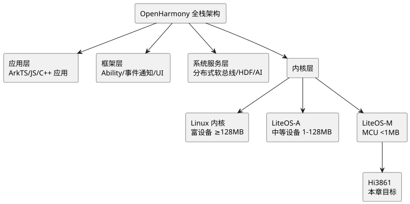
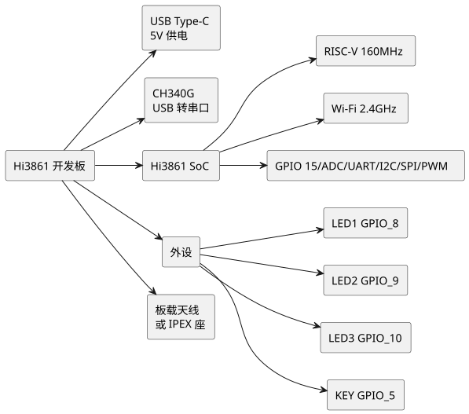
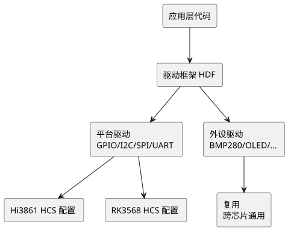
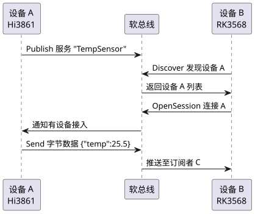
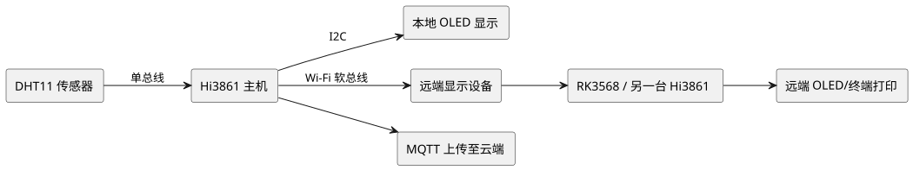

第 28 章 开源鸿蒙 OpenHarmony
学习目标
- 理解 OpenHarmony 整体架构与 LiteOS-M 内核，掌握其与 FreeRTOS、RT-Thread 的差异
- 掌握 DevEco Device Tool 开发环境搭建流程，能够独立完成 Hi3861 工程的编译与烧录
- 掌握 Hi3861 开发板的 GPIO、串口、定时器、ADC、I2C/SPI、Wi-Fi 等外设驱动开发
- 理解 HDF（HarmonyOS Driver Foundation）驱动框架的设计理念，能编写并注册简单的自定义驱动
- 完成分布式温湿度监控综合项目，体验 OpenHarmony 分布式软总线的跨设备协同能力
鸿蒙（HarmonyOS）是华为在 2019 年正式发布的面向万物互联时代的分布式操作系统。2020 年华为将鸿蒙的核心基础能力捐赠给开放原子开源基金会，形成开源版本 OpenHarmony。OpenHarmony 不是单纯的手机操作系统，而是面向"全场景、多设备"的统一操作系统框架，覆盖从 MCU（几百 KB 内存）到富设备（GB 级内存）的全谱系硬件。本章以海思 Hi3861 Wi-Fi 芯片为载体，介绍 OpenHarmony 在 MCU 领域的开发实践。

查看 PlantUML 源码
@startuml
skinparam defaultFontName "Microsoft YaHei"
skinparam backgroundColor #ffffff
top to bottom direction
rectangle "OpenHarmony 全栈架构" as A
rectangle "应用层\nArkTS/JS/C++ 应用" as B
rectangle "框架层\nAbility/事件通知/UI" as C
rectangle "系统服务层\n分布式软总线/HDF/AI" as D
rectangle "内核层" as E
rectangle "Linux 内核\n富设备 ≥128MB" as E1
rectangle "LiteOS-A\n中等设备 1-128MB" as E2
rectangle "LiteOS-M\nMCU <1MB" as E3
rectangle "Hi3861\n本章目标" as F
A --> B
A --> C
A --> D
A --> E
E --> E1
E --> E2
E --> E3
E3 --> F
@enduml28.1 OpenHarmony 简介
28.1.1 HarmonyOS 与 OpenHarmony 的关系
初学者最容易混淆华为 HarmonyOS 与开源 OpenHarmony 两者关系。简单来说：OpenHarmony 是开源项目，由开放原子开源基金会托管；HarmonyOS 是华为基于 OpenHarmony 二次开发的商业发行版，加入了华为移动服务（HMS）、闭源应用框架等。两者关系类似 AOSP（Android 开源项目）与 Android 商业版。
| 对比维度 | OpenHarmony（开源鸿蒙） | HarmonyOS（华为鸿蒙） |
|---|---|---|
| 性质 | 开源项目 | 商业发行版 |
| 托管方 | 开放原子开源基金会 | 华为终端有限公司 |
| 开源协议 | Apache 2.0 | 闭源 + 部分开源 |
| 目标设备 | MCU/智能穿戴/IoT/手机 | 手机/平板/手表/车机 |
| 代码仓库 | gitee.com/openharmony | 不公开 |
| 典型芯片 | Hi3861/Hi3518/RK3568/全志 | 麒麟系列 |
| 典型应用 | 智能家居、工业 IoT | 华为手机/平板 |
2024 年华为推出的 HarmonyOS NEXT（"纯血鸿蒙"）完全基于 OpenHarmony 内核，不再兼容 Android 应用，标志着 OpenHarmony 生态进入全新阶段。但对 MCU 开发者而言，我们关注的是 OpenHarmony 的 LiteOS-M 内核分支，它独立于手机鸿蒙演进，专注于资源受限设备。
28.1.2 OpenHarmony 架构
OpenHarmony 采用分层架构，自底向上分为内核层、系统服务层、框架层、应用层。其中内核层根据设备资源差异提供三种内核：
- LiteOS-M：面向 MCU 场景，内核体积可裁剪至 10 KB 以下，适用于 ARM Cortex-M、RISC-V 等小内核芯片，本章主角 Hi3861 即基于此内核。
- LiteOS-A：面向中等资源设备（内存 1 MB ~ 128 MB），支持进程隔离、虚拟文件系统，典型芯片如 Hi3518、Hi3516。
- Linux 内核：面向富设备（≥ 128 MB），典型芯片如 RK3568、Hi3516DV300，运行标准 Linux 内核与 OpenHarmony 标准系统。
| 内核 | 目标设备 | 内存下限 | 进程模型 | 典型芯片 |
|---|---|---|---|---|
| LiteOS-M | MCU/传感节点 | 几十 KB | 单进程多任务 | Hi3861/STM32F4 |
| LiteOS-A | IPC/智能穿戴 | 1 MB | 多进程 | Hi3518EV300 |
| Linux | 富设备/手机 | 128 MB | 多进程 | RK3568 |
28.1.3 LiteOS-M 与 FreeRTOS、RT-Thread 对比
LiteOS-M 与大家熟悉的 FreeRTOS、RT-Thread 同属轻量级实时操作系统，下表对比三者关键差异：
| 特性 | LiteOS-M | FreeRTOS | RT-Thread |
|---|---|---|---|
| 出品方 | 开放原子开源基金会 | Real Time Engineers Ltd. | RT-Thread Studio |
| 开源协议 | Apache 2.0 | MIT（部分商业收费） | GPLv2 / 商业双协议 |
| 最小内核体积 | 约 8 KB | 约 4 KB | 约 3 KB（nano 版） |
| 调度算法 | 优先级抢占 + 时间片 | 优先级抢占 | 优先级抢占 + 时间片 |
| 组件生态 | OpenHarmony HDF/软总线 | 纯内核，外设靠 HAL | RT-Thread Studio 软件包 |
| 分布式能力 | 原生支持 | 不支持 | 需自行实现 |
| 学习曲线 | 中（依赖 OpenHarmony 工具链） | 低（API 极简） | 低（中文文档好） |
28.1.4 生态现状
截至 2025 年，OpenHarmony 已有超过 70 家共建企业，包括华为、润和软件、九联科技、海思、瑞芯微、全志科技等。Gitee 上代码提交量超过 60 万次，已适配芯片 50+ 款，覆盖 MCU（Hi3861、BK3432、ESP32 等）、SoC（RK3568、Hi3516 等）多种形态。OpenHarmony 已成为国内物联网操作系统的主流开源选项之一。
28.2 LiteOS-M 内核
LiteOS-M 是 OpenHarmony 在 MCU 场景下的内核实现，源于华为早期的 LiteOS 操作系统，2019 年捐赠至 OpenHarmony 项目。其设计目标是"小、快、稳"——内核可裁剪至 8 KB 以下，调度延迟在微秒级，支持静态分析与形式化验证。
28.2.1 任务管理
LiteOS-M 采用优先级抢占式调度，支持 32 个优先级（0 最高、31 最低）。每个任务有自己的栈空间，高优先级任务就绪时会立即抢占低优先级任务。同优先级任务之间采用时间片轮转。
创建任务的典型代码如下：
#include "los_task.h"
#define TASK_PRIO 5
#define TASK_STACK_SIZE 0x1000 /* 4 KB 栈 */
static UINT32 g_taskId;
/* 任务入口函数 */
static void SensorTaskEntry(VOID)
{
while (1) {
/* 读取传感器、上传数据 */
LOS_TaskDelay(1000); /* 延时 1000 个 tick */
}
}
UINT32 CreateSensorTask(VOID)
{
UINT32 ret;
TSK_INIT_PARAM_S taskParam = {0};
taskParam.pfnTaskEntry = (TSK_ENTRY_FUNC)SensorTaskEntry;
taskParam.uwStackSize = TASK_STACK_SIZE;
taskParam.pcName = "SensorTask";
taskParam.usTaskPrio = TASK_PRIO;
ret = LOS_TaskCreate(&g_taskId, &taskParam);
if (ret != LOS_OK) {
printf("Task create failed: 0x%x\n", ret);
return ret;
}
return LOS_OK;
}
上述代码通过 TSK_INIT_PARAM_S 结构体配置任务参数，调用 LOS_TaskCreate 创建任务。LOS_TaskDelay 会使任务进入阻塞状态，让出 CPU 给其他任务。
28.2.2 任务间通信
LiteOS-M 提供完整的任务间通信机制，与 FreeRTOS 几乎对应：
| 机制 | LiteOS-M API | FreeRTOS 对应 | 典型用途 |
|---|---|---|---|
| 信号量 | LOS_SemCreate / LOS_SemPend | xSemaphoreCreateBinary | 任务同步 |
| 互斥锁 | LOS_MuxCreate / LOS_MuxPend | xSemaphoreCreateMutex | 共享资源保护 |
| 消息队列 | LOS_QueueCreate / LOS_QueueWrite | xQueueCreate / xQueueSend | 任务间数据传递 |
| 事件标志 | LOS_EventInit / LOS_EventRead | xEventGroupCreate | 多事件等待 |
| 软件定时器 | LOS_SwtmrCreate | xTimerCreate | 周期性任务 |
以消息队列为例，下面的代码演示了传感器任务通过队列向显示任务发送数据：
#include "los_queue.h"
#define QUEUE_LEN 16
#define QUEUE_SIZE sizeof(SensorData)
static UINT32 g_queueId;
typedef struct {
float temperature;
float humidity;
} SensorData;
UINT32 InitQueue(VOID)
{
return LOS_QueueCreate("sensorQ", QUEUE_LEN, &g_queueId, 0, QUEUE_SIZE);
}
/* 生产者：发送数据 */
VOID SendSensorData(SensorData *data)
{
LOS_QueueWrite(g_queueId, data, QUEUE_SIZE, LOS_NO_WAIT);
}
/* 消费者：阻塞等待数据 */
VOID DisplayTask(VOID)
{
SensorData recv;
UINT32 len = QUEUE_SIZE;
while (1) {
if (LOS_QueueRead(g_queueId, &recv, &len, LOS_WAIT_FOREVER) == LOS_OK) {
printf("T=%.1f H=%.1f\n", recv.temperature, recv.humidity);
}
}
}
28.2.3 软件定时器与中断管理
软件定时器允许在没有硬件定时器资源的情况下创建周期性任务。LiteOS-M 软件定时器基于系统 tick 中断驱动，精度受 tick 频率限制（默认 100 Hz，即 10 ms）。
#include "los_swtmr.h"
static UINT32 g_timerId;
/* 定时器回调：注意不能调用阻塞 API */
static VOID TimerCallback(UINT32 arg)
{
/* 翻转 LED、采集数据等轻量操作 */
HAL_GPIO_TogglePin(GPIO_0, GPIO_PIN_0);
}
UINT32 StartPeriodicTimer(VOID)
{
UINT32 ret;
/* 周期性定时器，1000 ms */
ret = LOS_SwtmrCreate(1000, LOS_SWTMR_MODE_PERIOD,
(SWTMR_PROC_FUNC)TimerCallback,
&g_timerId, 0);
if (ret != LOS_OK) return ret;
return LOS_SwtmrStart(g_timerId);
}
LOS_TaskDelay、LOS_QueueRead 带等待时间），只能调用 LOS_QueueWrite、LOS_EventWrite 等非阻塞接口。
28.2.4 内存管理
LiteOS-M 提供两种内存管理方案：
- 静态内存池（membox）：预分配固定大小内存块，分配/释放 O(1)，无碎片，适合任务栈、消息缓冲区等固定大小场景。
- 动态内存（slab/thunk）：标准
malloc/free实现，支持多种算法切换，灵活但有碎片风险。
28.3 DevEco Device Tool 环境搭建
OpenHarmony 提供两套开发工具，初学者务必区分清楚：
- DevEco Studio：面向应用开发者，使用 ArkTS 语言开发手机/平板/手表上的应用，类似 Android Studio。
- DevEco Device Tool：面向设备开发者，基于 VS Code 扩展，用于编译、烧录、调试设备固件，是本章使用的工具。
28.3.1 环境准备清单
| 组件 | 版本要求 | 说明 |
|---|---|---|
| 操作系统 | Windows 10/11 64 位 | 本章以 Win11 为例 |
| VS Code | 1.65+，建议最新版 | DevEco Device Tool 是 VS Code 插件 |
| Python | 3.8 ~ 3.9（不可用 3.10+） | 构建脚本依赖 |
| Node.js | 14.x ~ 16.x LTS | HDC 工具依赖 |
| Java JDK | 11 | 部分工具链依赖 |
| git | 2.x | 代码获取 |
| hb（HarmonyOS Build） | 最新 | OpenHarmony 构建系统 |
| hpm（HarmonyOS Package Manager） | 最新 | 组件包管理 |
| arm-none-eabi-gcc | 10.3+ | 用于 STM32 等 ARM Cortex-M 芯片 |
| riscv32-esp-elf | 2021+ | Hi3861 是 RISC-V 架构 |
28.3.2 安装 DevEco Device Tool
- 访问 https://device.harmonyos.com/，下载 DevEco Device Tool Windows 版安装包（约 600 MB，包含 VS Code、Python、Node.js 等一站式依赖）。
- 以管理员身份运行
deveco-device-tool-windows-tool-3.x.x.exe，按向导完成安装。 - 安装完成后打开 VS Code，左侧 Activity Bar 会出现 DevEco Device Tool 图标，表明插件已就绪。
- 打开命令面板（Ctrl+Shift+P），输入
DevEco: Generate Key生成 SSH 密钥（用于后续从 Gitee 拉取代码）。
28.3.3 配置 OpenHarmony SDK 与源码
Hi3861 开发需要拉取 OpenHarmony 轻量系统源码。推荐使用 hpm 方式：
# 1. 全局安装 hpm 命令行工具
npm install -g @ohos/hpm-cli
# 2. 新建工程目录并初始化
mkdir ohos_hi3861 && cd ohos_hi3861
hpm init -b default
# 3. 安装 hi3861 开发板 bundle
hpm install @ohos/hi3861_sdk
# 4. 拉取 OpenHarmony 轻量系统源码（约 1.5 GB）
repo init -u https://gitee.com/openharmony/manifest.git -b master --no-repo-verify
repo sync -c
AttributeError: 'dict' object has no attribute 'has_key'。务必使用 Python 3.8 或 3.9。可通过 py -3.9 -m pip install ... 显式指定版本。
28.3.4 环境变量验证
完成安装后，打开 PowerShell 验证关键工具是否可用：
python --version # 应输出 Python 3.8.x 或 3.9.x
node --version # 应输出 v14.x 或 v16.x
hpm --version # 应输出 hpm-cli 版本号
hb --version # 应输出 HarmonyOS Build 版本号
arm-none-eabi-gcc --version
riscv32-esp-elf-gcc --version
如果 hb 命令未找到，需要在 OpenHarmony 源码根目录执行 pip install build/lite 安装。
28.4 Hi3861 开发板介绍
Hi3861 是海思半导体推出的 Wi-Fi SoC 芯片，是 OpenHarmony 在 MCU 领域的旗舰开发平台。它采用 RISC-V 32 位内核，集成 2.4 GHz Wi-Fi，是 OpenHarmony L0（轻量级设备）的官方参考芯片。
28.4.1 Hi3861 芯片参数
| 参数项 | Hi3861 规格 | 对比 ESP32（参考） |
|---|---|---|
| CPU 内核 | RISC-V 32 位（单核） | Xtensa LX6 32 位（双核） |
| 主频 | 160 MHz | 240 MHz |
| SRAM | 64 KB 内置 | 520 KB 内置 |
| ROM | 320 KB 内置 | 448 KB 内置 |
| Flash | 2 MB 外置 SPI Flash | 4 MB 外置 SPI Flash |
| Wi-Fi | 802.11 b/g/n 2.4 GHz | 802.11 b/g/n 2.4 GHz |
| 蓝牙 | 无 | BLE 4.2 |
| GPIO | 15 个 | 34 个 |
| ADC | 8 通道 12 位 | 2 通道 12 位 |
| UART/I2C/SPI | 2/1/1 | 3/2/2 |
| PWM | 6 通道 | 16 通道 |
| 典型工作电流 | 34 mA（Wi-Fi 联机） | 80 mA（Wi-Fi 联机） |
| 深度睡眠 | 5 µA | 10 µA |
| 操作系统 | OpenHarmony LiteOS-M | FreeRTOS / ESP-IDF |
28.4.2 常见开发板
市面上常见的 Hi3861 开发板有两款：
- Hi3861 WVNA 开发板：海思官方设计，板载 USB 转串口（CH340）、3 个 LED（LED1/LED2/LED3）、1 个用户按键（KEY）、Type-C 供电，板载天线。
- 润和 HiSpark Wi-Fi IoT 开发板：润和软件设计，外设资源与海思版类似，社区资料更丰富，价格更亲民（约 30 元）。

查看 PlantUML 源码
@startuml
skinparam defaultFontName "Microsoft YaHei"
skinparam backgroundColor #ffffff
left to right direction
rectangle "Hi3861 开发板" as A
rectangle "USB Type-C\n5V 供电" as B
rectangle "CH340G\nUSB 转串口" as C
rectangle "Hi3861 SoC" as D
rectangle "RISC-V 160MHz" as D1
rectangle "Wi-Fi 2.4GHz" as D2
rectangle "GPIO 15/ADC/UART/I2C/SPI/PWM" as D3
rectangle "外设" as E
rectangle "LED1 GPIO_8" as E1
rectangle "LED2 GPIO_9" as E2
rectangle "LED3 GPIO_10" as E3
rectangle "KEY GPIO_5" as E4
rectangle "板载天线\n或 IPEX 座" as F
A --> B
A --> C
A --> D
D --> D1
D --> D2
D --> D3
A --> E
E --> E1
E --> E2
E --> E3
E --> E4
A --> F
@enduml28.4.3 引脚分布
Hi3861 模组对外引出 24 个引脚，开发板通过排针引出。常用引脚定义如下表：
| 引脚名 | 功能 | 说明 |
|---|---|---|
| 3V3 / GND | 电源 | 3.3 V 供电与地 |
| GPIO_0/1/2/3 | 通用 IO | 可复用为 SPI |
| GPIO_4 | ADC_4 | 模拟输入通道 4 |
| GPIO_5 | KEY 按键 | 开发板用户按键 |
| GPIO_8 | LED1 | 开发板 LED1（低电平点亮） |
| GPIO_9 | LED2 | 开发板 LED2 |
| GPIO_10 | LED3 | 开发板 LED3 |
| GPIO_6/7 | I2C_SCL/SDA | I2C 总线 |
| TXD/RXD | UART0 | 串口通信（与 CH340 相连） |
28.5 第一个程序：LED 闪烁
本节通过"Hello World 级"的 LED 闪烁程序，完整演示 Hi3861 工程的创建、编写、编译、烧录全流程。
28.5.1 创建工程
使用 hpm 创建新组件的命令如下：
# 在 OpenHarmony 源码根目录下
cd applications/sample/wifi-iot/app
# 新建 my_led 目录作为业务模块
mkdir my_led
cd my_led
# 创建源文件与构建文件
new-item my_led.c
new-item BUILD.gn
28.5.2 工程结构
一个典型的 Hi3861 业务工程结构如下：
applications/sample/wifi-iot/app/
├── my_led/
│ ├── my_led.c # 业务源码
│ └── BUILD.gn # GN 构建脚本
├── BUILD.gn # 顶层 GN，聚合各业务模块
└── ... # 其他内置业务
顶层 BUILD.gn 需要将自定义模块加入编译列表：
# applications/sample/wifi-iot/app/BUILD.gn
import("//build/lite/config/component/lite_component.gni")
lite_component("app") {
features = [
"my_led:my_led", # 启用自定义 LED 模块
]
}
28.5.3 业务代码
编写 LED 闪烁的源码 my_led.c：
#include
#include "ohos_init.h"
#include "cmsis_os2.h"
#include "hi_gpio.h"
#include "hi_io.h"
#define LED_GPIO HI_IO_NAME_GPIO_9 /* LED2 引脚 */
#define BLINK_INTERVAL_MS 500
static void LedBlinkTask(void *arg)
{
(void)arg;
/* 初始化 GPIO */
hi_gpio_init();
hi_io_set_func(LED_GPIO, HI_IO_FUNC_GPIO_9_GPIO);
hi_gpio_set_dir(LED_GPIO, HI_GPIO_DIR_OUT);
while (1) {
hi_gpio_set_ouput_val(LED_GPIO, HI_GPIO_VALUE1); /* 灭 */
osDelay(BLINK_INTERVAL_MS);
hi_gpio_set_ouput_val(LED_GPIO, HI_GPIO_VALUE0); /* 亮 */
osDelay(BLINK_INTERVAL_MS);
}
}
static void LedBlinkEntry(void)
{
osThreadAttr_t attr = {0};
attr.name = "LedBlinkTask";
attr.stack_size = 1024;
attr.priority = osPriorityNormal;
if (osThreadNew((osThreadFunc_t)LedBlinkTask, NULL, &attr) == NULL) {
printf("Failed to create LedBlinkTask!\n");
}
}
/* 注册系统启动钩子，OpenHarmony 启动后自动调用 */
APP_FEATURE_INIT(LedBlinkEntry);
代码要点说明：
hi_gpio_init()初始化 GPIO 外设，必须在使用前调用一次。hi_io_set_func()配置引脚复用功能，Hi3861 引脚默认是 JTAG/SPI 等，需显式切换为 GPIO。osDelay()是 CMSIS-RTOS2 接口，底层映射到 LiteOS-M 的LOS_TaskDelay，相比直接LOS_TaskDelay更具可移植性。APP_FEATURE_INIT宏将函数注册到系统启动流程，在OHOS_SystemInit阶段自动调用，无需手写main()。
28.5.4 BUILD.gn 配置
# applications/sample/wifi-iot/app/my_led/BUILD.gn
static_library("my_led") {
sources = [
"my_led.c",
]
include_dirs = [
"//utils/native/lite/include",
"//vendor/hisi/hi3861/hi3861/include",
"//device/hisilicon/hispark_pegasus/sdk_liteos/include",
]
}
static_library编译为静态库，便于复用。include_dirs必须列出 OpenHarmony CMSIS、Hi3861 SDK 头文件路径。
28.5.5 编译与烧录
在源码根目录执行 hb 命令编译：
# 设置产品目标
hb set
# 选择: hi3861 -> wifiiot_hispark_pegasus
# 开始编译
hb build -f
编译成功后会在 out/hispark_pegasus/wifiiot_hispark_pegasus/ 下生成 Hi3861_wifiiot_app_allinone.bin。使用 DevEco Device Tool 的烧录功能，或海思 HiBurn 工具，通过串口将 bin 文件烧录到开发板。
烧录步骤：
- 用 USB Type-C 线连接开发板与电脑。
- 设备管理器确认 CH340 串口（COMx）已识别。
- 打开 HiBurn，选择串口号、波特率（推荐 921600）、勾选 Auto Burn。
- 选择
Hi3861_wifiiot_app_allinone.bin，点击 Connect。 - 按下开发板复位键，HiBurn 检测到自动开始烧录。
- 烧录完成后断电重启，即可看到 LED2 以 0.5 秒周期闪烁。
28.6 GPIO 控制
本节深入 GPIO 控制，包括输出驱动 LED、输入检测按键、中断模式三个层次。Hi3861 SDK 提供 hi_gpio.h 与 hi_io.h 两套 API，前者控制方向与电平，后者配置复用功能。
28.6.1 GPIO 输出：点亮 LED
#include "hi_gpio.h"
#include "hi_io.h"
/* 点亮 LED1（GPIO_8） */
void LedOn(void)
{
hi_gpio_init();
hi_io_set_func(HI_IO_NAME_GPIO_8, HI_IO_FUNC_GPIO_8_GPIO);
hi_gpio_set_dir(HI_IO_NAME_GPIO_8, HI_GPIO_DIR_OUT);
hi_gpio_set_ouput_val(HI_IO_NAME_GPIO_8, HI_GPIO_VALUE0); /* 低电平点亮 */
}
/* 熄灭 LED1 */
void LedOff(void)
{
hi_gpio_set_ouput_val(HI_IO_NAME_GPIO_8, HI_GPIO_VALUE1);
}
28.6.2 GPIO 输入：按键检测
开发板上的 KEY 按键接在 GPIO_5 上，按下时接地（低电平），松开时上拉（高电平）。轮询读取代码如下：
#include "hi_gpio.h"
#include "hi_io.h"
#include "cmsis_os2.h"
#define KEY_GPIO HI_IO_NAME_GPIO_5
void KeyInit(void)
{
hi_gpio_init();
hi_io_set_func(KEY_GPIO, HI_IO_FUNC_GPIO_5_GPIO);
hi_gpio_set_dir(KEY_GPIO, HI_GPIO_DIR_IN);
hi_io_set_pull(KEY_GPIO, HI_IO_PULL_UP); /* 内部上拉 */
}
/* 轮询检测按键 */
void KeyPollTask(void *arg)
{
hi_gpio_value val;
while (1) {
hi_gpio_get_input_val(KEY_GPIO, &val);
if (val == HI_GPIO_VALUE0) {
printf("Key pressed!\n");
/* 简单消抖 */
osDelay(20);
while (1) {
hi_gpio_get_input_val(KEY_GPIO, &val);
if (val == HI_GPIO_VALUE1) break;
osDelay(10);
}
printf("Key released!\n");
}
osDelay(10);
}
}
28.6.3 GPIO 中断模式
轮询方式浪费 CPU 资源，中断方式更高效。Hi3861 支持 GPIO 下降沿、上升沿、双沿中断：
#include "hi_gpio.h"
#include "hi_io.h"
static void KeyIsrCallback(void *arg)
{
/* 中断回调：注意不能调用阻塞 API */
printf("Key interrupt triggered!\n");
}
void KeyInterruptInit(void)
{
hi_gpio_init();
hi_io_set_func(HI_IO_NAME_GPIO_5, HI_IO_FUNC_GPIO_5_GPIO);
hi_gpio_set_dir(HI_IO_NAME_GPIO_5, HI_GPIO_DIR_IN);
hi_io_set_pull(HI_IO_NAME_GPIO_5, HI_IO_PULL_UP);
/* 注册下降沿中断 */
hi_gpio_register_isr_function(HI_IO_NAME_GPIO_5,
HI_INT_TYPE_EDGE,
HI_GPIO_EDGE_FALL_LEVEL_LOW,
KeyIsrCallback, NULL);
}
28.6.4 与 STM32 HAL 库对比
| 功能 | Hi3861 API | STM32 HAL API |
|---|---|---|
| 初始化 GPIO | hi_gpio_init + hi_io_set_func + hi_gpio_set_dir | HAL_GPIO_Init(GPIO_TypeDef*, GPIO_InitTypeDef*) |
| 设置输出电平 | hi_gpio_set_ouput_val | HAL_GPIO_WritePin |
| 读取输入电平 | hi_gpio_get_input_val | HAL_GPIO_ReadPin |
| 注册中断 | hi_gpio_register_isr_function | HAL_GPIO_RegisterExtI / HAL_NVIC_SetIRQ |
| 复用功能 | hi_io_set_func | GPIO_InitTypeDef.Alternate |
两者的设计哲学不同：STM32 HAL 通过 GPIO_InitTypeDef 结构体一次性配置方向/上下拉/复用/速度，Hi3861 则拆分为多个细粒度函数，灵活性更高但调用步骤更多。
28.7 串口通信
Hi3861 内置 2 路 UART：UART0 默认作为日志输出与 CH340 串口相连，UART1 留给用户使用。本节介绍 UART 收发与 printf 重定向。
28.7.1 UART 初始化
#include "hi_uart.h"
#include "hi_io.h"
#define UART1_BAUDRATE 115200
void Uart1Init(void)
{
/* 配置 GPIO_5/6 为 UART1 复用功能 */
hi_io_set_func(HI_IO_NAME_GPIO_5, HI_IO_FUNC_GPIO_5_UART1_RXD);
hi_io_set_func(HI_IO_NAME_GPIO_6, HI_IO_FUNC_GPIO_6_UART1_TXD);
hi_uart_init(HI_UART_IDX_1, NULL); /* 先复位 */
}
28.7.2 printf 重定向
日志输出是开发中最常用的功能。通过重写 fputc 可以让标准 printf 输出到 UART0：
#include
#include "hi_uart.h"
/* 重定向 printf 到 UART0 */
int fputc(int ch, FILE *f)
{
(void)f;
hi_uart_write(HI_UART_IDX_0, (const hi_u8 *)&ch, 1);
return ch;
}
由于 printf 默认未链接浮点支持，若要打印 float，需在链接选项添加 -u _printf_float，或在 CMake/GN 配置中加 ldflags = ["-u", "_printf_float"]。
28.7.3 串口发送字符串
void UartSendString(const char *str)
{
hi_uart_write(HI_UART_IDX_1, (const hi_u8 *)str, strlen(str));
}
void Demo(void)
{
UartSendString("Hello OpenHarmony!\r\n");
}
28.7.4 串口接收中断
#include "hi_uart.h"
static uint8_t g_rxbuf[128];
static volatile uint16_t g_rxlen = 0;
/* UART1 接收中断回调 */
static void Uart1Isr(const void *arg)
{
(void)arg;
hi_u8 byte;
if (hi_uart_read(HI_UART_IDX_1, &byte, 1) > 0) {
if (g_rxlen < sizeof(g_rxbuf) - 1) {
g_rxbuf[g_rxlen++] = byte;
}
/* 简单约定：以 '\n' 结尾则触发处理 */
if (byte == '\n') {
g_rxbuf[g_rxlen] = 0;
/* 这里可调用 LOS_QueueWrite 发送给业务任务 */
g_rxlen = 0;
}
}
}
void Uart1EnableIrq(void)
{
hi_uart_register_isr(HI_UART_IDX_1, Uart1Isr, NULL);
}
28.8 定时器
定时器分硬件定时器与软件定时器两类。Hi3861 内置 4 个硬件定时器，OpenHarmony 在其上又提供软件定时器服务，建议优先使用软件定时器以节省硬件资源。
28.8.1 软件定时器：1 秒翻转 LED
#include "cmsis_os2.h"
static osTimerId_t g_ledTimer;
static void LedToggleCallback(void *arg)
{
(void)arg;
static int level = 0;
hi_gpio_set_ouput_val(HI_IO_NAME_GPIO_8,
level ? HI_GPIO_VALUE1 : HI_GPIO_VALUE0);
level = !level;
}
void LedTimerStart(void)
{
/* 初始化 GPIO */
hi_gpio_init();
hi_io_set_func(HI_IO_NAME_GPIO_8, HI_IO_FUNC_GPIO_8_GPIO);
hi_gpio_set_dir(HI_IO_NAME_GPIO_8, HI_GPIO_DIR_OUT);
/* 创建周期定时器，1000 ms */
g_ledTimer = osTimerNew(LedToggleCallback, osTimerPeriodic, NULL, NULL);
osTimerStart(g_ledTimer, 1000);
}
28.8.2 硬件定时器
当需要更精确的时序（如 PWM、捕获）时使用硬件定时器：
#include "hi_timer.h"
static hi_void HwTimerCallback(hi_void *data)
{
(void)data;
/* 硬件定时器回调，精度可达微秒级 */
static int cnt = 0;
if (++cnt % 1000 == 0) {
printf("HW tick: %d ms\n", cnt);
}
}
void HwTimerStart(void)
{
hi_timer_create();
hi_timer_start(HI_TIMER_ID_0, HI_TIMER_TYPE_PERIOD,
1, HwTimerCallback, NULL); /* 1 ms 周期 */
}
28.9 ADC 模数转换
Hi3861 内置 8 通道 12 位 ADC，可读取电位器、光敏电阻、电池电压等模拟信号。Hi3861 ADC 单次转换时间约 5 µs，输入电压范围 0 ~ 1.8 V（注意不是 3.3 V，超出会损坏芯片），需配合分压电路使用。
28.9.1 ADC 初始化与读取
#include "hi_adc.h"
#define ADC_BATTERY_CH HI_ADC_CHANNEL_4 /* GPIO_4 复用 */
#define VREF 1.8f /* 参考电压 */
#define ADC_MAX 4095.0f /* 12 位分辨率 */
/* 读取 ADC 原始值 */
uint16_t AdcReadRaw(hi_adc_channel_index ch)
{
hi_u16 value;
if (hi_adc_read(ch, &value, HI_ADC_EQU_MODEL_4,
HI_ADC_CUR_BAIS_DEFAULT, 0) == HI_ERR_SUCCESS) {
return value;
}
return 0;
}
/* 转换为电压值 */
float AdcToVoltage(uint16_t raw)
{
return (float)raw * VREF / ADC_MAX;
}
/* 读取电池电压（分压 1:2，输入范围 0-3.6V） */
float ReadBatteryVoltage(void)
{
uint16_t raw = AdcReadRaw(ADC_BATTERY_CH);
return AdcToVoltage(raw) * 2.0f;
}
28.9.2 与 STM32 ADC 对比
| 特性 | Hi3861 | STM32F407 |
|---|---|---|
| 分辨率 | 12 位 | 12 位 |
| 通道数 | 8 | 24（含内部温度/Vref） |
| 采样率 | 200 kSPS | 2.4 MSPS |
| 参考电压 | 1.8 V（固定） | 外部 Vref+ / 内部 3.3 V |
| 输入范围 | 0 ~ 1.8 V | 0 ~ Vref |
| 转换模式 | 单次、连续、扫描 | 单次、连续、扫描、注入 |
| DMA 支持 | 无 | 有 |
Hi3861 ADC 参考电压固定为 1.8 V，远低于 3.3 V，必须使用分压电阻。例如测量 3.3 V 信号需用两只等值电阻分压至 1.65 V 后再接入 ADC。
28.10 I2C 与 SPI 通信
28.10.1 I2C 读取 BMP280 温湿度
#include "hi_i2c.h"
#define BMP280_ADDR 0x76
#define BMP280_REG_ID 0xD0
#define BMP280_REG_DATA 0xF7
uint8_t Bmp280ReadId(void)
{
hi_u8 reg = BMP280_REG_ID;
hi_u8 id = 0;
hi_i2c_data data = {0};
/* 写寄存器地址 */
data.send_buf = ®
data.send_len = 1;
hi_i2c_write(HI_I2C_IDX_0, BMP280_ADDR, &data);
/* 读 1 字节 */
data.receive_buf = &id;
data.receive_len = 1;
hi_i2c_read(HI_I2C_IDX_0, BMP280_ADDR, &data);
return id; /* 应为 0x58 */
}
/* 读取温湿度原始数据（8 字节） */
void Bmp280ReadRaw(uint8_t *buf, uint8_t len)
{
hi_u8 reg = BMP280_REG_DATA;
hi_i2c_data data = {0};
data.send_buf = ®
data.send_len = 1;
hi_i2c_write(HI_I2C_IDX_0, BMP280_ADDR, &data);
data.receive_buf = buf;
data.receive_len = len;
hi_i2c_read(HI_I2C_IDX_0, BMP280_ADDR, &data);
}
28.10.2 SPI 驱动 SSD1306 OLED
SSD1306 OLED 屏是嵌入式项目中最常见的显示模块。SPI 接口比 I2C 速度更快，适合刷新动画：
#include "hi_spi.h"
#define OLED_SPI HI_SPI_ID_0
#define OLED_DC_PIN HI_IO_NAME_GPIO_10 /* 数据/命令选择 */
#define OLED_CS_PIN HI_IO_NAME_GPIO_11 /* 片选 */
#define OLED_RST_PIN HI_IO_NAME_GPIO_12 /* 复位 */
static void OledWriteCmd(uint8_t cmd)
{
hi_gpio_set_ouput_val(OLED_DC_PIN, HI_GPIO_VALUE0); /* 命令 */
hi_gpio_set_ouput_val(OLED_CS_PIN, HI_GPIO_VALUE0);
hi_spi_send(OLED_SPI, &cmd, 1, 100);
hi_gpio_set_ouput_val(OLED_CS_PIN, HI_GPIO_VALUE1);
}
static void OledWriteData(uint8_t dat)
{
hi_gpio_set_ouput_val(OLED_DC_PIN, HI_GPIO_VALUE1); /* 数据 */
hi_gpio_set_ouput_val(OLED_CS_PIN, HI_GPIO_VALUE0);
hi_spi_send(OLED_SPI, &dat, 1, 100);
hi_gpio_set_ouput_val(OLED_CS_PIN, HI_GPIO_VALUE1);
}
void OledInit(void)
{
/* 初始化 SPI 与 GPIO */
hi_spi_init(OLED_SPI, NULL);
hi_io_set_func(OLED_DC_PIN, HI_IO_FUNC_GPIO_10_GPIO);
hi_io_set_func(OLED_CS_PIN, HI_IO_FUNC_GPIO_11_GPIO);
hi_io_set_func(OLED_RST_PIN, HI_IO_FUNC_GPIO_12_GPIO);
hi_gpio_set_dir(OLED_DC_PIN, HI_GPIO_DIR_OUT);
hi_gpio_set_dir(OLED_CS_PIN, HI_GPIO_DIR_OUT);
hi_gpio_set_dir(OLED_RST_PIN, HI_GPIO_DIR_OUT);
/* 硬件复位 */
hi_gpio_set_ouput_val(OLED_RST_PIN, HI_GPIO_VALUE0);
osDelay(100);
hi_gpio_set_ouput_val(OLED_RST_PIN, HI_GPIO_VALUE1);
/* SSD1306 初始化命令序列 */
OledWriteCmd(0xAE); /* 关闭显示 */
OledWriteCmd(0xD5); OledWriteCmd(0x80); /* 时钟分频 */
OledWriteCmd(0xA8); OledWriteCmd(0x3F); /* 多路复用 */
OledWriteCmd(0xD3); OledWriteCmd(0x00); /* 显示偏移 */
OledWriteCmd(0x40); /* 起始行 */
OledWriteCmd(0x8D); OledWriteCmd(0x14); /* 充电泵 */
OledWriteCmd(0x20); OledWriteCmd(0x00); /* 寻址模式 */
OledWriteCmd(0xA1); OledWriteCmd(0xC8); /* 段/扫描方向 */
OledWriteCmd(0xDA); OledWriteCmd(0x12); /* COM 引脚 */
OledWriteCmd(0x81); OledWriteCmd(0xCF); /* 对比度 */
OledWriteCmd(0xD9); OledWriteCmd(0xF1); /* 预充电 */
OledWriteCmd(0xDB); OledWriteCmd(0x40); /* VCOMH */
OledWriteCmd(0xA4); OledWriteCmd(0xA6); /* 输出/正常显示 */
OledWriteCmd(0xAF); /* 开启显示 */
}
28.11 Wi-Fi 联网
Wi-Fi 是 Hi3861 的核心能力。OpenHarmony 集成 lwIP 协议栈与 Paho-MQTT 库，可以方便地实现 TCP/UDP/HTTP/MQTT 联网应用。
28.11.1 Wi-Fi STA 模式连接
#include "wifi_device.h"
#include "wifi_device_config.h"
#define WIFI_SSID "OpenHarmony_AP"
#define WIFI_PSK "12345678"
void WifiConnect(void)
{
WifiDeviceConfig config = {0};
strcpy(config.ssid, WIFI_SSID);
strcpy(config.preSharedKey, WIFI_PSK);
config.securityType = WIFI_SEC_TYPE_PSK;
int netId = 0;
if (EnableWifi() != WIFI_SUCCESS) {
printf("EnableWifi failed\n");
return;
}
if (AddDeviceConfig(&config, &netId) != WIFI_SUCCESS) {
printf("AddDeviceConfig failed\n");
return;
}
if (ConnectTo(netId) != WIFI_SUCCESS) {
printf("ConnectTo failed\n");
return;
}
printf("Wi-Fi connected, waiting for IP...\n");
/* 等待 DHCP 获取 IP */
WifiLinkedInfo info = {0};
while (1) {
if (GetLinkedInfo(&info) == WIFI_SUCCESS &&
info.ipAddress != 0) {
printf("Got IP: 0x%08x\n", info.ipAddress);
break;
}
osDelay(500);
}
}
28.11.2 HTTP GET 请求
OpenHarmony 在 lwIP 之上提供标准 BSD socket，可直接编写 HTTP 客户端：
#include
#include
#include
#include
int HttpGet(const char *host, int port, const char *path, char *resp, int maxLen)
{
struct hostent *he = gethostbyname(host);
if (he == NULL) return -1;
int sock = socket(AF_INET, SOCK_STREAM, 0);
if (sock < 0) return -1;
struct sockaddr_in server = {0};
server.sin_family = AF_INET;
server.sin_port = htons(port);
server.sin_addr = *((struct in_addr *)he->h_addr);
if (connect(sock, (struct sockaddr *)&server, sizeof(server)) < 0) {
closesocket(sock);
return -1;
}
char request[256];
snprintf(request, sizeof(request),
"GET %s HTTP/1.1\r\nHost: %s\r\nConnection: close\r\n\r\n",
path, host);
send(sock, request, strlen(request), 0);
int total = 0, n;
while ((n = recv(sock, resp + total, maxLen - total - 1, 0)) > 0) {
total += n;
if (total >= maxLen - 1) break;
}
resp[total] = '\0';
closesocket(sock);
return total;
}
void DemoHttp(void)
{
static char buf[1024];
int n = HttpGet("httpbin.org", 80, "/get", buf, sizeof(buf));
printf("HTTP response (%d bytes):\n%s\n", n, buf);
}
28.11.3 MQTT 连接 EMQX
OpenHarmony 第三方库集成 Paho-MQTT-C，连接 EMQX 公共 broker 示例：
#include "MQTTClient.h"
#define MQTT_BROKER "broker.emqx.io"
#define MQTT_PORT 1883
#define MQTT_CLIENTID "hi3861_client_001"
#define MQTT_TOPIC "ohos/sensor/temp"
void MqttPublishTask(void *arg)
{
(void)arg;
MQTTClient client;
NetworkInit(&client.network);
MQTTClientInit(&client, &client.network, 2000);
MQTTPacket_connectData opts = MQTTPacket_connectData_initializer;
opts.clientID.cstring = MQTT_CLIENTID;
if (NetworkConnect(&client.network, MQTT_BROKER, MQTT_PORT) != 0) {
printf("MQTT connect failed\n");
return;
}
if (MQTTConnect(&client, &opts) != 0) {
printf("MQTT login failed\n");
return;
}
printf("MQTT connected!\n");
while (1) {
char msg[64];
float t = ReadTemperature();
snprintf(msg, sizeof(msg), "{\"temp\":%.2f}", t);
MQTTMessage message = {0};
message.qos = QOS1;
message.payload = msg;
message.payloadlen = strlen(msg);
MQTTPublish(&client, MQTT_TOPIC, &message);
osDelay(5000); /* 5 秒上传一次 */
}
}
WiFi.begin() 一行即可联网，OpenHarmony 略繁琐但更细粒度；OpenHarmony 默认启用 lwIP + BSD socket，与 Linux/Unix 网络编程完全一致，对熟悉 POSIX 网络的开发者更友好。
28.12 HDF 驱动框架
HDF（HarmonyOS Driver Foundation）是 OpenHarmony 的核心创新之一。它是一套统一的驱动开发框架，目标是"一次开发，多端部署"——同一份驱动代码可在 Hi3861、RK3568 等不同芯片上运行，实现驱动可复用、平台解耦。
28.12.1 设计理念
传统 RTOS 的驱动开发有两大痛点：
- 平台耦合：STM32 写的 GPIO 驱动无法移植到 ESP32，每个芯片都要重写。
- 驱动复用差：传感器驱动（如 BMP280）与具体 I2C 控制器纠缠在一起，换一个 I2C 控制器就要改 BMP280 代码。
HDF 通过以下机制解决：
- HCS（Hardware Configuration Source）：将硬件配置从代码中分离到 .hcs 文件，像设备树一样描述硬件。
- 统一驱动模型：所有驱动实现
HdfDriverEntry接口，由 HDF 框架统一加载、注册、调度。 - 平台驱动：GPIO/I2C/SPI/UART 等 SOC 平台驱动由芯片厂商实现，外设驱动只调用统一接口。

查看 PlantUML 源码
@startuml
skinparam defaultFontName "Microsoft YaHei"
skinparam backgroundColor #ffffff
top to bottom direction
rectangle "应用层代码" as A
rectangle "驱动框架 HDF" as B
rectangle "平台驱动\nGPIO/I2C/SPI/UART" as C
rectangle "外设驱动\nBMP280/OLED/..." as D
rectangle "Hi3861 HCS 配置" as E
rectangle "RK3568 HCS 配置" as F
rectangle "复用\n跨芯片通用" as G
A --> B
B --> C
B --> D
C --> E
C --> F
D --> G
@enduml28.12.2 HCS 配置文件
HCS 是 OpenHarmony 自定义的硬件描述语言，类似 Linux 设备树。示例如下：
// device_info.hcs 节点片段
root {
device_info {
platform {
i2c_0 :: device {
device0 :: deviceNode {
policy = 2; /* 0=不提供服务，2=用户态访问 */
priority = 50;
permission = 0644;
moduleName = "HDF_PLATFORM_I2C";
serviceName = "HDF_PLATFORM_I2C_0";
deviceMatchAttr = "hi3861_i2c_0";
}
}
}
}
}
28.12.3 自定义驱动实现
每个驱动需要实现 HdfDriverEntry 结构体，包含 Bind/Init/Release 三个回调：
#include "hdf_device_desc.h"
#include "hdf_log.h"
static int32_t MyDriverBind(struct HdfDeviceObject *dev)
{
HDF_LOGI("MyDriver bind called");
return HDF_SUCCESS;
}
static int32_t MyDriverInit(struct HdfDeviceObject *dev)
{
HDF_LOGI("MyDriver init: device=%s", dev->property->name);
/* 在此读取 HCS 配置、初始化硬件 */
return HDF_SUCCESS;
}
static void MyDriverRelease(struct HdfDeviceObject *dev)
{
HDF_LOGI("MyDriver release");
}
/* 注册驱动入口 */
struct HdfDriverEntry g_myDriverEntry = {
.moduleVersion = 1,
.moduleName = "MY_CUSTOM_DRIVER",
.Bind = MyDriverBind,
.Init = MyDriverInit,
.Release = MyDriverRelease,
};
HDF_INIT(g_myDriverEntry);
28.12.4 HDF 的工程价值
HDF 对工程实践的价值体现在三方面：
- 跨芯片复用：编写一次 BMP280 驱动，Hi3861、RK3568、Hi3516 等多个 OpenHarmony 平台都能直接使用。
- 硬件配置与代码分离：换一颗 BMP280 芯片只改 HCS 配置中的 I2C 总线号、地址，无需重新编译驱动。
- 统一应用接口：上层应用调用
DevmgrService获取驱动服务，不直接接触硬件寄存器，便于单元测试。
hi_i2c_write）快速上手项目；项目成熟后再迁移至 HDF 接口以提升可移植性。
28.13 分布式软总线（简介）
分布式软总线是 OpenHarmony 区别于其他 RTOS 的标志性能力。它为多设备提供统一的跨设备通信基础设施，应用层无需关心底层是 Wi-Fi、以太网还是蓝牙，用同一套 API 即可实现设备发现、连接、消息传输。
28.13.1 核心概念
- 设备发现：基于 CoAP/mDNS 自动发现局域网内其他 OpenHarmony 设备。
- 统一通信：所有设备共享一个逻辑"总线"，发布-订阅模式，无需关心对方 IP。
- 设备认证：基于 HMAC 的设备绑定与信任关系建立。
- 会话管理：通过 sessionId 标识一次会话，支持多设备并发通信。

查看 PlantUML 源码
@startuml
skinparam defaultFontName "Microsoft YaHei"
skinparam backgroundColor #ffffff
participant "设备 A\nHi3861" as A
participant "软总线" as B
participant "设备 B\nRK3568" as C
A -> B : Publish 服务 "TempSensor"
C -> B : Discover 发现设备 A
B -> C : 返回设备 A 列表
C -> B : OpenSession 连接 A
B -> A : 通知有设备接入
A -> B : Send 字节数据 {"temp":25.5}
B -> C : 推送至订阅者 C
@enduml28.13.2 软总线 API 使用示例
#include "softbus_bus_center.h"
#include "session.h"
#define SESSION_NAME "ohos.distributed.temp"
#define MODULE_NAME "ohos.distributed.temp.module"
/* 会话回调 */
static int OnSessionOpened(int sessionId, int result)
{
printf("Session opened, id=%d result=%d\n", sessionId, result);
return 0;
}
static void OnSessionClosed(int sessionId) {}
static void OnBytesReceived(int sessionId, const void *data, unsigned int len)
{
printf("Recv from %d: %.*s\n", sessionId, len, (char *)data);
}
static ISessionListener g_listener = {
.OnSessionOpened = OnSessionOpened,
.OnSessionClosed = OnSessionClosed,
.OnBytesReceived = OnBytesReceived,
};
void SoftbusInit(void)
{
/* 1. 加入局域网组网 */
char networkId[NETWORK_ID_BUF_LEN] = {0};
int ret = GetLocalNodeDeviceInfo("ohos.distributed.app", networkId);
printf("Local networkId=%s, ret=%d\n", networkId, ret);
/* 2. 创建会话服务 */
CreateSessionServer("ohos.distributed.app", SESSION_NAME, &g_listener);
/* 3. 主动连接其他设备（需要先通过 GetNodeKey 获取 deviceId） */
/* OpenSession(pkgName, sessionName, peerNetworkId, groupId, &attr); */
}
28.13.3 与传统 Wi-Fi socket 对比
| 维度 | 软总线 | TCP socket |
|---|---|---|
| 设备发现 | 自动发现 | 需手动指定 IP |
| 跨网段通信 | 支持（基于软总线路由） | 不支持 |
| 会话管理 | 框架托管 | 应用自管 |
| 消息格式 | 字节数组 / JSON | 自定义 |
| 典型场景 | 多端协同、分布式应用 | 点对点通信 |
| 学习成本 | 中 | 低 |
28.13.4 分布式温湿度应用场景
设想智能家居场景：客厅有一台 Hi3861 采集温湿度，卧室有一台 OpenHarmony 显示设备。通过软总线，客厅的 Hi3861 自动发现卧室显示设备，无需配置 IP，发布温湿度数据后显示设备自动接收并刷新屏幕。这种"无感协同"是传统 socket 实现不了的体验，是 OpenHarmony 在物联网场景的核心竞争力。
28.14 调试技巧与常见问题
28.14.1 串口日志调试
串口是最基础也最重要的调试手段。OpenHarmony 启动后会通过 UART0 输出系统日志，波特率默认 115200。建议:
- 使用串口调试助手（如 SecureCRT、MobaXterm、PuTTY）查看实时日志。
- 开启 OpenHarmony 日志级别为 INFO 或 DEBUG：
hi_log_level(HI_LOG_LEVEL_DEBUG); - 使用
HILOGI/HILOGD/HILOGE宏替代printf，自动带文件名、行号、时间戳。
#include "hi_log.h"
#define LOG_TAG "MY_APP"
void DemoLog(void)
{
HILOGI(LOG_TAG, "Info: boot complete");
HILOGD(LOG_TAG, "Debug: temp=%d", 25);
HILOGE(LOG_TAG, "Error: sensor not responding!");
}
28.14.2 GDB 调试
Hi3861 支持 JTAG 调试，可用 OpenOCD + GDB 进行断点、单步、变量查看。DevEco Device Tool 集成了 GDB 调试入口，配置好 OpenOCD 后即可在 VS Code 中可视化调试。
28.14.3 常见错误排查
| 错误现象 | 可能原因 | 解决方法 |
|---|---|---|
| 编译报 "import '//build/lite/...'" 失败 | 源码不完整或 hb 未配置 | 重新 repo sync；执行 hb set 选择产品 |
| Python 报 AttributeError has_key | Python 版本不兼容 | 降级到 Python 3.8/3.9 |
| HiBurn 烧录失败、卡 0% | 串口未选对/波特率过高/芯片未复位 | 检查 COM 端口；降到 460800；按复位键 |
| 启动循环（持续重启） | 看门狗未被喂/任务栈溢出 | 增大任务栈；检查阻塞 API 是否在中断中调用 |
| Wi-Fi 始终连不上 | SSID/密码错/AP 是 5 GHz/距离过远 | 检查凭据；用 2.4 GHz AP；靠近路由器 |
| printf 不输出 | 未重定向 fputc / UART0 被占用 | 添加 fputc 重定向代码 |
| printf 无法打印 float | 未启用浮点格式支持 | 链接选项加 -u _printf_float |
| 定时器回调不执行 | tick 频率过低/未 start | 检查 osTimerStart；提高 LOSCFG_BASE_CORE_TICK_PER_SECOND |
28.14.4 内存泄漏检测
LiteOS-M 提供 LOS_MemStatisticsGet 查看内存池状态，定期打印可发现泄漏：
#include "los_memory.h"
void PrintMemStatus(void)
{
LOS_MEM_POOL_STATUS status;
LOS_MemStatisticsGet(m_aucSysMem0, &status);
printf("Used: %u, Free: %u, Total: %u, Tasks: %u\n",
status.uwMemUsed, status.uwMemFree,
status.uwTotalSize, status.uwTaskNum);
}
28.15 综合项目：分布式温湿度监控
本章的综合项目把前面所有知识点串联起来——构建一个分布式温湿度监控系统：Hi3861 采集温湿度并显示在本地 OLED，同时通过软总线广播给另一台 OpenHarmony 设备显示。
28.15.1 系统架构

查看 PlantUML 源码
@startuml
skinparam defaultFontName "Microsoft YaHei"
skinparam backgroundColor #ffffff
left to right direction
rectangle "DHT11 传感器" as A
rectangle "Hi3861 主机" as B
rectangle "本地 OLED 显示" as C
rectangle "远端显示设备" as D
rectangle "RK3568 / 另一台 Hi3861" as E
rectangle "远端 OLED/终端打印" as F
rectangle "MQTT 上传至云端" as G
A --> B : 单总线
B --> C : I2C
B --> D : Wi-Fi 软总线
D --> E
E --> F
B --> G
@enduml28.15.2 硬件清单
| 元件 | 接口 | 用途 |
|---|---|---|
| Hi3861 开发板 | — | 主控 + Wi-Fi |
| DHT11 温湿度传感器 | GPIO_7（单总线） | 采集温湿度 |
| 0.96" OLED SSD1306 | I2C0（GPIO_6/7） | 本地显示 |
| 第二台 OpenHarmony 设备 | — | 分布式协同显示端 |
28.15.3 关键代码
1. DHT11 读取
#include "hi_gpio.h"
#include "hi_time.h"
#define DHT11_PIN HI_IO_NAME_GPIO_11
typedef struct {
int temperature; /* 0.1℃ 单位 */
int humidity; /* 0.1% 单位 */
} DhtData;
/* 微秒级延时 */
static void DelayUs(uint32_t us)
{
hi_udelay(us);
}
/* 读取引脚电平（封装） */
static hi_gpio_value ReadPin(void)
{
hi_gpio_value v = HI_GPIO_VALUE0;
hi_gpio_get_input_val(DHT11_PIN, &v);
return v;
}
/* 读取 1 字节 */
static uint8_t Dht11ReadByte(void)
{
uint8_t byte = 0;
for (int i = 0; i < 8; i++) {
uint32_t t = 0;
while (ReadPin() == HI_GPIO_VALUE0) { /* 等待低电平结束 */
if (++t > 100) return 0xFF;
DelayUs(1);
}
DelayUs(40); /* 40 us 后判断是否仍为高电平 */
if (ReadPin() == HI_GPIO_VALUE1) {
byte |= (1 << (7 - i));
t = 0;
while (ReadPin() == HI_GPIO_VALUE1) {
if (++t > 100) break;
DelayUs(1);
}
}
}
return byte;
}
int Dht11Read(DhtData *data)
{
uint8_t buf[5];
/* 主机发起启动信号 */
hi_gpio_set_dir(DHT11_PIN, HI_GPIO_DIR_OUT);
hi_gpio_set_ouput_val(DHT11_PIN, HI_GPIO_VALUE0);
osDelay(20); /* 拉低 ≥18 ms */
hi_gpio_set_ouput_val(DHT11_PIN, HI_GPIO_VALUE1);
DelayUs(30);
/* 切换为输入 */
hi_gpio_set_dir(DHT11_PIN, HI_GPIO_DIR_IN);
/* 等待 DHT11 响应（80us 低 + 80us 高） */
uint32_t t = 0;
hi_gpio_value v;
do {
hi_gpio_get_input_val(DHT11_PIN, &v);
if (++t > 200) return -1;
DelayUs(1);
} while (v == HI_GPIO_VALUE1);
t = 0;
do {
hi_gpio_get_input_val(DHT11_PIN, &v);
if (++t > 200) return -1;
DelayUs(1);
} while (v == HI_GPIO_VALUE0);
/* 读取 40 bit 数据 */
for (int i = 0; i < 5; i++) buf[i] = Dht11ReadByte();
/* 校验和 */
if ((uint8_t)(buf[0] + buf[1] + buf[2] + buf[3]) != buf[4]) return -1;
data->humidity = buf[0] * 10 + buf[1];
data->temperature = buf[2] * 10 + (buf[3] & 0x7F);
if (buf[3] & 0x80) data->temperature = -data->temperature;
return 0;
}
2. OLED 显示温湿度（参考 §28.10.2 的 SPI 驱动）
extern void OledShowString(int x, int y, const char *str);
void DisplayTempHumidity(int temp, int humi)
{
char line[20];
snprintf(line, sizeof(line), "Temp: %d.%d C",
temp / 10, temp % 10);
OledShowString(0, 0, line);
snprintf(line, sizeof(line), "Humi: %d.%d %%",
humi / 10, humi % 10);
OledShowString(0, 2, line);
}
3. 软总线广播温湿度（参考 §28.13）
extern ISessionListener g_listener;
void BroadcastTempHumidity(int sessionId, int temp, int humi)
{
char msg[64];
snprintf(msg, sizeof(msg),
"{\"type\":\"th\",\"temp\":%d,\"humi\":%d}",
temp, humi);
SendBytes(sessionId, msg, strlen(msg));
}
4. 主任务整合
void TempMonitorTask(void *arg)
{
(void)arg;
DhtData d;
int sessionId = -1; /* 实际从软总线发现回调中获取 */
/* 初始化外设 */
hi_gpio_init();
OledInit();
WifiConnect();
SoftbusInit();
while (1) {
if (Dht11Read(&d) == 0) {
DisplayTempHumidity(d.temperature, d.humidity);
if (sessionId >= 0) {
BroadcastTempHumidity(sessionId,
d.temperature, d.humidity);
}
MqttPublish(d.temperature, d.humidity); /* 云端上传 */
} else {
printf("DHT11 read failed\n");
}
osDelay(3000); /* 3 秒采集一次 */
}
}
APP_FEATURE_INIT(TempMonitorTask);
28.15.4 部署到多设备
- 把上述固件烧录到主采集设备（Hi3861）。
- 第二台 OpenHarmony 设备运行"显示端"程序，订阅软总线会话，收到消息后刷新 OLED。
- 两台设备接入同一 Wi-Fi，启动后自动发现对方，开始数据同步。
- 云端 EMQX broker 订阅 MQTT 主题，可在 PC 端用 MQTTX 工具订阅查看实时数据曲线。
28.16 常见问题与进阶资源
28.16.1 FAQ
Q1：HiBurn 烧录一直失败怎么排查？
A：按以下顺序排查：① 确认 CH340 驱动已安装、设备管理器中可见 COMx；② HiBurn 波特率从 921600 降到 460800；③ 拔插 USB 重新上电；④ 烧录时按住开发板复位键直到 HiBurn 显示 Connecting，再松开；⑤ 检查 bin 文件路径不含中文/空格。
Q2：编译环境 Python 版本必须严格 3.8 吗？
A：OpenHarmony 3.x ~ 5.x 要求 Python 3.8 或 3.9，3.10+ 会因 dict.has_key 移除而报错。若必须用 3.10+，可尝试社区补丁但不保证稳定。推荐用 pyenv 多版本切换。
Q3：Wi-Fi 连接超时是何原因？
A：常见原因：① 路由器是 5 GHz 频段，Hi3861 只支持 2.4 GHz；② SSID 含中文；③ 密码错；④ 路由器启用了 MAC 过滤；⑤ 距离过远信号弱。建议先用手机热点测试排除路由器问题。
Q4：Hi3861 能跑标准 OpenHarmony 应用吗？
A：不能。Hi3861 内存只有几十 KB，只能跑 LiteOS-M + 轻量系统应用（C 语言开发）。ArkTS/JS 应用需要 LiteOS-A 或 Linux 内核，至少 1 MB 内存，需迁移到 Hi3516、RK3568 等芯片。
28.16.2 进阶方向
| 方向 | 说明 | 推荐资源 |
|---|---|---|
| OpenHarmony 4.0/5.0 新特性 | ArkUI 跨端 UI、ArkCompiler 优化、分布式数据管理 | OpenHarmony 官方 Release Notes |
| HarmonyOS NEXT | 纯血鸿蒙，纯 ArkTS 应用生态 | HarmonyOS 开发者官网 |
| Hi3861 → RK3568 迁移 | 从 MCU 跨入富设备，体验完整 OpenHarmony | RK3568 OpenHarmony 适配指南 |
| NAPI（Node-API）开发 | 用 C++ 扩展 ArkTS 应用，Hi3861 设备驱动接入上层 | NAPI 官方文档 |
| OpenHarmony 内核源码分析 | LiteOS-M 调度器、内存池源码阅读 | kernel/liteos_m 仓库 |
| HDF 高级用法 | 平台驱动开发、HCS 配置进阶 | drivers/hdf_core 文档 |
28.16.3 学习资源
- 开放原子开源基金会：https://www.openatom.org/ — OpenHarmony 的官方托管方，提供课程与认证。
- OpenHarmony 官方仓库：https://gitee.com/openharmony — 完整源码、文档与示例。
- OpenHarmony 开发者社区：https://www.openharmony.cn/ — 中文开发者门户。
- Hi3861 SDK 数据手册：海思半导体官网 / 润和软件社区资料。
- B 站视频：搜索"OpenHarmony Hi3861 入门"，有大量免费教学视频。
本章小结
- OpenHarmony 是面向万物互联的分布式操作系统，由开放原子开源基金会托管；其内核层提供 LiteOS-M（MCU）、LiteOS-A（中等设备）、Linux（富设备）三种内核，分别对应不同资源档位的硬件。
- LiteOS-M 是面向 MCU 的轻量级实时内核，提供任务、信号量、互斥锁、消息队列、事件、软件定时器等机制，API 与 FreeRTOS 大体对应，但与 OpenHarmony 上层框架（HDF、软总线）无缝集成。
- DevEco Device Tool 基于 VS Code，是设备端开发的核心工具。Hi3861 是 OpenHarmony 在 MCU 领域的官方参考芯片，RISC-V 160 MHz + Wi-Fi，资源虽小但功能完整。
- Hi3861 外设开发与 STM32 HAL 库思路相似，但 API 更细粒度：GPIO、UART、定时器、ADC、I2C/SPI、Wi-Fi 各有独立模块。注意 ADC 参考电压为 1.8 V，需分压电路适配 3.3 V 信号。
- HDF 驱动框架是 OpenHarmony 的核心创新——通过 HCS 配置与统一驱动模型实现跨芯片代码复用；分布式软总线是 OpenHarmony 的另一标志能力，让多设备协同无需关心底层网络细节。
- 综合项目"分布式温湿度监控"串联了 DHT11 采集、OLED 显示、Wi-Fi 联网、软总线广播、MQTT 上云等全部知识点，是检验本章学习成果的最佳实践。
思考题与习题
- 简述 OpenHarmony 与华为 HarmonyOS 的区别，并说明 LiteOS-M、LiteOS-A、Linux 三种内核各自适用的设备档位。
- 对比 LiteOS-M 与 FreeRTOS 在任务管理、消息队列、软件定时器 API 上的异同，迁移一份 FreeRTOS 代码到 LiteOS-M 需要修改哪些主要部分？
- Hi3861 的 ADC 参考电压为 1.8 V，现需测量 0-3.3 V 的电池电压，请设计分压电路并写出电压换算公式。
- 在 Hi3861 上实现"按键按下 3 秒以上触发 Wi-Fi 配网模式"的功能，要求使用 GPIO 中断 + 软件定时器组合实现，写出关键代码。
- HDF 驱动框架解决了传统 RTOS 驱动开发的哪些痛点？请结合 HCS 配置和 HdfDriverEntry 接口说明其解耦机制。
- 分布式软总线与传统 TCP socket 通信相比有哪些优势？在什么场景下应优先选择软总线方案？
- 设计一个基于 Hi3861 的智能花盆系统：检测土壤湿度（ADC）、自动浇水（GPIO 控制继电器）、Wi-Fi 上报数据到 MQTT 服务器、低土壤湿度时通过软总线通知手机端报警。画出系统框图并说明软件分层。
参考文献
- 开放原子开源基金会. OpenHarmony 开发者文档 [EB/OL]. https://www.openharmony.cn/, 2024.
- OpenHarmony 项目. OpenHarmony 源码仓库 [EB/OL]. https://gitee.com/openharmony, 2024.
- 海思半导体. Hi3861 WiFi芯片用户指南 [Z]. 2022.
- 华为终端有限公司. DevEco Device Tool 用户指南 [EB/OL]. https://device.harmonyos.com/, 2024.
- 润和软件. HiSpark Wi-Fi IoT 开发板教程 [EB/OL]. https://www.hihope.org/, 2023.
- LiteOS 开源项目. LiteOS-M 内核文档 [EB/OL]. https://gitee.com/LiteOS/LiteOS_M, 2024.
- 张容容, 等. OpenHarmony 操作系统设计与实现 [M]. 北京: 电子工业出版社, 2022.
- 谢有铭. 鸿蒙HarmonyOS应用开发实战 [M]. 北京: 人民邮电出版社, 2023.
- ARM. CMSIS-RTOS2 API Specification [EB/OL]. https://www.keil.com/pack/doc/CMSIS/RTOS2/html/, 2023.
- lwIP 项目. lwIP TCP/IP stack documentation [EB/OL]. https://www.nongnu.org/lwip/, 2024.